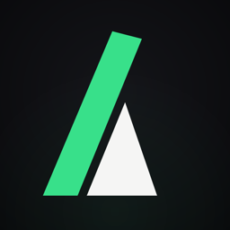

AtlisSupport
Something not working, or a question about Atlis? We read every message.
Email us
zacharyzaslavsky11@gmail.com
Is Atlis financial advice?
No. Atlis is an information tool. It shows real prices and real news about the stocks you own and explains them in plain English. It never tells you to buy or sell anything.
Where does the data come from?
Prices, charts and news come from established market-data providers. Each "why it moved" line is a real headline with its source named. If we can't find one, we show nothing instead of guessing.
How do I delete my data?
Your portfolio and settings are stored on your phone. Use Settings → "Start over" in the app, or delete the app. To be removed from the early-access list, use the unsubscribe link in any email or email us.
Who is Atlis for?
Adults 18 and older who invest, or want to, and want to understand what their money is doing.